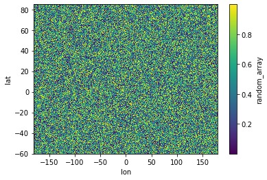
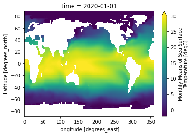
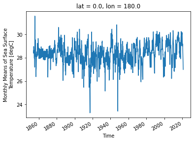
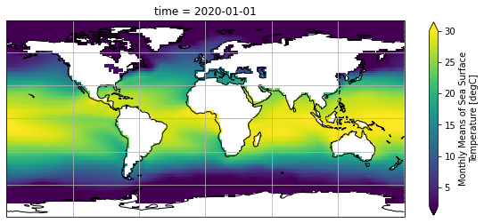

xarray¶
xarray is a library for labelled multidimensional array objects (dataset and dataarrays).
Tutorial based on excellent guide from Pangeo.
import xarray as xr
import numpy as np
da = xr.DataArray([1, 2, 3])
da
<xarray.DataArray (dim_0: 3)> array([1, 2, 3]) Dimensions without coordinates: dim_0
xarray.DataArray
- dim_0: 3
- 1 2 3
array([1, 2, 3])
lat = np.arange(-60, 85, 0.25)
lon = np.arange(-180, 180, 0.25)
lat[0:10]
array([-60. , -59.75, -59.5 , -59.25, -59. , -58.75, -58.5 , -58.25,
-58. , -57.75])
lon[0:10]
array([-180. , -179.75, -179.5 , -179.25, -179. , -178.75, -178.5 ,
-178.25, -178. , -177.75])
random_array = np.random.rand(np.shape(lat)[0], np.shape(lon)[0])
random_array
array([[1.78029228e-01, 2.97276687e-01, 5.31069276e-02, ...,
2.70971194e-01, 8.01272743e-01, 2.41689120e-01],
[1.41682333e-01, 2.97239304e-01, 1.99523220e-01, ...,
3.07680258e-01, 5.04390906e-01, 6.97271387e-01],
[6.53360031e-01, 4.61224377e-01, 7.38179367e-01, ...,
8.83803050e-01, 5.25700574e-01, 5.86550056e-01],
...,
[6.16735592e-04, 4.58138736e-01, 7.53986211e-01, ...,
7.31198077e-03, 6.36850201e-01, 9.67078751e-01],
[8.49047108e-01, 1.73119527e-01, 2.23669840e-02, ...,
8.61517627e-01, 6.01920470e-01, 5.49953991e-01],
[7.55201294e-01, 1.31814904e-02, 5.14946117e-01, ...,
9.64296339e-02, 9.60066715e-01, 3.46997788e-02]])
da = xr.DataArray(
random_array,
dims=('lat', 'lon'),
coords={'lat': lat, 'lon': lon}
)
da
<xarray.DataArray (lat: 580, lon: 1440)>
array([[1.78029228e-01, 2.97276687e-01, 5.31069276e-02, ...,
2.70971194e-01, 8.01272743e-01, 2.41689120e-01],
[1.41682333e-01, 2.97239304e-01, 1.99523220e-01, ...,
3.07680258e-01, 5.04390906e-01, 6.97271387e-01],
[6.53360031e-01, 4.61224377e-01, 7.38179367e-01, ...,
8.83803050e-01, 5.25700574e-01, 5.86550056e-01],
...,
[6.16735592e-04, 4.58138736e-01, 7.53986211e-01, ...,
7.31198077e-03, 6.36850201e-01, 9.67078751e-01],
[8.49047108e-01, 1.73119527e-01, 2.23669840e-02, ...,
8.61517627e-01, 6.01920470e-01, 5.49953991e-01],
[7.55201294e-01, 1.31814904e-02, 5.14946117e-01, ...,
9.64296339e-02, 9.60066715e-01, 3.46997788e-02]])
Coordinates:
* lat (lat) float64 -60.0 -59.75 -59.5 -59.25 ... 84.0 84.25 84.5 84.75
* lon (lon) float64 -180.0 -179.8 -179.5 -179.2 ... 179.2 179.5 179.8xarray.DataArray
- lat: 580
- lon: 1440
- 0.178 0.2973 0.05311 0.637 0.9648 ... 0.1376 0.09643 0.9601 0.0347
array([[1.78029228e-01, 2.97276687e-01, 5.31069276e-02, ..., 2.70971194e-01, 8.01272743e-01, 2.41689120e-01], [1.41682333e-01, 2.97239304e-01, 1.99523220e-01, ..., 3.07680258e-01, 5.04390906e-01, 6.97271387e-01], [6.53360031e-01, 4.61224377e-01, 7.38179367e-01, ..., 8.83803050e-01, 5.25700574e-01, 5.86550056e-01], ..., [6.16735592e-04, 4.58138736e-01, 7.53986211e-01, ..., 7.31198077e-03, 6.36850201e-01, 9.67078751e-01], [8.49047108e-01, 1.73119527e-01, 2.23669840e-02, ..., 8.61517627e-01, 6.01920470e-01, 5.49953991e-01], [7.55201294e-01, 1.31814904e-02, 5.14946117e-01, ..., 9.64296339e-02, 9.60066715e-01, 3.46997788e-02]]) - lat(lat)float64-60.0 -59.75 -59.5 ... 84.5 84.75
array([-60. , -59.75, -59.5 , ..., 84.25, 84.5 , 84.75])
- lon(lon)float64-180.0 -179.8 ... 179.5 179.8
array([-180. , -179.75, -179.5 , ..., 179.25, 179.5 , 179.75])
ds = da.to_dataset(name='random_array')
ds
<xarray.Dataset>
Dimensions: (lat: 580, lon: 1440)
Coordinates:
* lat (lat) float64 -60.0 -59.75 -59.5 -59.25 ... 84.25 84.5 84.75
* lon (lon) float64 -180.0 -179.8 -179.5 ... 179.2 179.5 179.8
Data variables:
random_array (lat, lon) float64 0.178 0.2973 0.05311 ... 0.9601 0.0347xarray.Dataset
- lat: 580
- lon: 1440
- lat(lat)float64-60.0 -59.75 -59.5 ... 84.5 84.75
array([-60. , -59.75, -59.5 , ..., 84.25, 84.5 , 84.75])
- lon(lon)float64-180.0 -179.8 ... 179.5 179.8
array([-180. , -179.75, -179.5 , ..., 179.25, 179.5 , 179.75])
- random_array(lat, lon)float640.178 0.2973 ... 0.9601 0.0347
array([[1.78029228e-01, 2.97276687e-01, 5.31069276e-02, ..., 2.70971194e-01, 8.01272743e-01, 2.41689120e-01], [1.41682333e-01, 2.97239304e-01, 1.99523220e-01, ..., 3.07680258e-01, 5.04390906e-01, 6.97271387e-01], [6.53360031e-01, 4.61224377e-01, 7.38179367e-01, ..., 8.83803050e-01, 5.25700574e-01, 5.86550056e-01], ..., [6.16735592e-04, 4.58138736e-01, 7.53986211e-01, ..., 7.31198077e-03, 6.36850201e-01, 9.67078751e-01], [8.49047108e-01, 1.73119527e-01, 2.23669840e-02, ..., 8.61517627e-01, 6.01920470e-01, 5.49953991e-01], [7.55201294e-01, 1.31814904e-02, 5.14946117e-01, ..., 9.64296339e-02, 9.60066715e-01, 3.46997788e-02]])
ds.random_array.plot();

url = 'http://www.esrl.noaa.gov/psd/thredds/dodsC/Datasets/noaa.ersst.v5/sst.mnmean.nc'
ds = xr.open_dataset(url, drop_variables=['time_bnds'])
ds
<xarray.Dataset>
Dimensions: (lat: 89, lon: 180, time: 2006)
Coordinates:
* lat (lat) float32 88.0 86.0 84.0 82.0 80.0 ... -82.0 -84.0 -86.0 -88.0
* lon (lon) float32 0.0 2.0 4.0 6.0 8.0 ... 350.0 352.0 354.0 356.0 358.0
* time (time) datetime64[ns] 1854-01-01 1854-02-01 ... 2021-02-01
Data variables:
sst (time, lat, lon) float32 ...
Attributes:
climatology: Climatology is based on 1971-2000 SST, X...
description: In situ data: ICOADS2.5 before 2007 and ...
keywords_vocabulary: NASA Global Change Master Directory (GCM...
keywords: Earth Science > Oceans > Ocean Temperatu...
instrument: Conventional thermometers
source_comment: SSTs were observed by conventional therm...
geospatial_lon_min: -1.0
geospatial_lon_max: 359.0
geospatial_laty_max: 89.0
geospatial_laty_min: -89.0
geospatial_lat_max: 89.0
geospatial_lat_min: -89.0
geospatial_lat_units: degrees_north
geospatial_lon_units: degrees_east
cdm_data_type: Grid
project: NOAA Extended Reconstructed Sea Surface ...
original_publisher_url: http://www.ncdc.noaa.gov
References: https://www.ncdc.noaa.gov/data-access/ma...
source: In situ data: ICOADS R3.0 before 2015, N...
title: NOAA ERSSTv5 (in situ only)
history: created 07/2017 by PSD data using NCEI's...
institution: This version written at NOAA/ESRL PSD: o...
citation: Huang et al, 2017: Extended Reconstructe...
platform: Ship and Buoy SSTs from ICOADS R3.0 and ...
standard_name_vocabulary: CF Standard Name Table (v40, 25 January ...
processing_level: NOAA Level 4
Conventions: CF-1.6, ACDD-1.3
metadata_link: :metadata_link = https://doi.org/10.7289...
creator_name: Boyin Huang (original)
date_created: 2017-06-30T12:18:00Z (original)
product_version: Version 5
creator_url_original: https://www.ncei.noaa.gov
license: No constraints on data access or use
comment: SSTs were observed by conventional therm...
summary: ERSST.v5 is developed based on v4 after ...
dataset_title: NOAA Extended Reconstructed SST V5
data_modified: 2021-03-07
DODS_EXTRA.Unlimited_Dimension: timexarray.Dataset
- lat: 89
- lon: 180
- time: 2006
- lat(lat)float3288.0 86.0 84.0 ... -86.0 -88.0
- units :
- degrees_north
- long_name :
- Latitude
- actual_range :
- [ 88. -88.]
- standard_name :
- latitude
- axis :
- Y
- coordinate_defines :
- center
array([ 88., 86., 84., 82., 80., 78., 76., 74., 72., 70., 68., 66., 64., 62., 60., 58., 56., 54., 52., 50., 48., 46., 44., 42., 40., 38., 36., 34., 32., 30., 28., 26., 24., 22., 20., 18., 16., 14., 12., 10., 8., 6., 4., 2., 0., -2., -4., -6., -8., -10., -12., -14., -16., -18., -20., -22., -24., -26., -28., -30., -32., -34., -36., -38., -40., -42., -44., -46., -48., -50., -52., -54., -56., -58., -60., -62., -64., -66., -68., -70., -72., -74., -76., -78., -80., -82., -84., -86., -88.], dtype=float32) - lon(lon)float320.0 2.0 4.0 ... 354.0 356.0 358.0
- units :
- degrees_east
- long_name :
- Longitude
- actual_range :
- [ 0. 358.]
- standard_name :
- longitude
- axis :
- X
- coordinate_defines :
- center
array([ 0., 2., 4., 6., 8., 10., 12., 14., 16., 18., 20., 22., 24., 26., 28., 30., 32., 34., 36., 38., 40., 42., 44., 46., 48., 50., 52., 54., 56., 58., 60., 62., 64., 66., 68., 70., 72., 74., 76., 78., 80., 82., 84., 86., 88., 90., 92., 94., 96., 98., 100., 102., 104., 106., 108., 110., 112., 114., 116., 118., 120., 122., 124., 126., 128., 130., 132., 134., 136., 138., 140., 142., 144., 146., 148., 150., 152., 154., 156., 158., 160., 162., 164., 166., 168., 170., 172., 174., 176., 178., 180., 182., 184., 186., 188., 190., 192., 194., 196., 198., 200., 202., 204., 206., 208., 210., 212., 214., 216., 218., 220., 222., 224., 226., 228., 230., 232., 234., 236., 238., 240., 242., 244., 246., 248., 250., 252., 254., 256., 258., 260., 262., 264., 266., 268., 270., 272., 274., 276., 278., 280., 282., 284., 286., 288., 290., 292., 294., 296., 298., 300., 302., 304., 306., 308., 310., 312., 314., 316., 318., 320., 322., 324., 326., 328., 330., 332., 334., 336., 338., 340., 342., 344., 346., 348., 350., 352., 354., 356., 358.], dtype=float32) - time(time)datetime64[ns]1854-01-01 ... 2021-02-01
- long_name :
- Time
- delta_t :
- 0000-01-00 00:00:00
- avg_period :
- 0000-01-00 00:00:00
- prev_avg_period :
- 0000-00-07 00:00:00
- standard_name :
- time
- axis :
- T
- actual_range :
- [19723. 80750.]
- _ChunkSizes :
- 1
array(['1854-01-01T00:00:00.000000000', '1854-02-01T00:00:00.000000000', '1854-03-01T00:00:00.000000000', ..., '2020-12-01T00:00:00.000000000', '2021-01-01T00:00:00.000000000', '2021-02-01T00:00:00.000000000'], dtype='datetime64[ns]')
- sst(time, lat, lon)float32...
- long_name :
- Monthly Means of Sea Surface Temperature
- units :
- degC
- var_desc :
- Sea Surface Temperature
- level_desc :
- Surface
- statistic :
- Mean
- dataset :
- NOAA Extended Reconstructed SST V5
- parent_stat :
- Individual Values
- actual_range :
- [-1.8 42.32636]
- valid_range :
- [-1.8 45. ]
- _ChunkSizes :
- [ 1 89 180]
[32136120 values with dtype=float32]
- climatology :
- Climatology is based on 1971-2000 SST, Xue, Y., T. M. Smith, and R. W. Reynolds, 2003: Interdecadal changes of 30-yr SST normals during 1871.2000. Journal of Climate, 16, 1601-1612.
- description :
- In situ data: ICOADS2.5 before 2007 and NCEP in situ data from 2008 to present. Ice data: HadISST ice before 2010 and NCEP ice after 2010.
- keywords_vocabulary :
- NASA Global Change Master Directory (GCMD) Science Keywords
- keywords :
- Earth Science > Oceans > Ocean Temperature > Sea Surface Temperature >
- instrument :
- Conventional thermometers
- source_comment :
- SSTs were observed by conventional thermometers in Buckets (insulated or un-insulated canvas and wooded buckets) or Engine Room Intaker
- geospatial_lon_min :
- -1.0
- geospatial_lon_max :
- 359.0
- geospatial_laty_max :
- 89.0
- geospatial_laty_min :
- -89.0
- geospatial_lat_max :
- 89.0
- geospatial_lat_min :
- -89.0
- geospatial_lat_units :
- degrees_north
- geospatial_lon_units :
- degrees_east
- cdm_data_type :
- Grid
- project :
- NOAA Extended Reconstructed Sea Surface Temperature (ERSST)
- original_publisher_url :
- http://www.ncdc.noaa.gov
- References :
- https://www.ncdc.noaa.gov/data-access/marineocean-data/extended-reconstructed-sea-surface-temperature-ersst-v5 at NCEI and http://www.esrl.noaa.gov/psd/data/gridded/data.noaa.ersst.v5.html
- source :
- In situ data: ICOADS R3.0 before 2015, NCEP in situ GTS from 2016 to present, and Argo SST from 1999 to present. Ice data: HadISST2 ice before 2015, and NCEP ice after 2015
- title :
- NOAA ERSSTv5 (in situ only)
- history :
- created 07/2017 by PSD data using NCEI's ERSST V5 NetCDF values
- institution :
- This version written at NOAA/ESRL PSD: obtained from NOAA/NESDIS/National Centers for Environmental Information and time aggregated. Original Full Source: NOAA/NESDIS/NCEI/CCOG
- citation :
- Huang et al, 2017: Extended Reconstructed Sea Surface Temperatures Version 5 (ERSSTv5): Upgrades, Validations, and Intercomparisons. Journal of Climate, https://doi.org/10.1175/JCLI-D-16-0836.1
- platform :
- Ship and Buoy SSTs from ICOADS R3.0 and NCEP GTS
- standard_name_vocabulary :
- CF Standard Name Table (v40, 25 January 2017)
- processing_level :
- NOAA Level 4
- Conventions :
- CF-1.6, ACDD-1.3
- metadata_link :
- :metadata_link = https://doi.org/10.7289/V5T72FNM (original format)
- creator_name :
- Boyin Huang (original)
- date_created :
- 2017-06-30T12:18:00Z (original)
- product_version :
- Version 5
- creator_url_original :
- https://www.ncei.noaa.gov
- license :
- No constraints on data access or use
- comment :
- SSTs were observed by conventional thermometers in Buckets (insulated or un-insulated canvas and wooded buckets), Engine Room Intakers, or floats and drifters
- summary :
- ERSST.v5 is developed based on v4 after revisions of 8 parameters using updated data sets and advanced knowledge of ERSST analysis
- dataset_title :
- NOAA Extended Reconstructed SST V5
- data_modified :
- 2021-03-07
- DODS_EXTRA.Unlimited_Dimension :
- time
sst = ds['sst']
sst
<xarray.DataArray 'sst' (time: 2006, lat: 89, lon: 180)>
[32136120 values with dtype=float32]
Coordinates:
* lat (lat) float32 88.0 86.0 84.0 82.0 80.0 ... -82.0 -84.0 -86.0 -88.0
* lon (lon) float32 0.0 2.0 4.0 6.0 8.0 ... 350.0 352.0 354.0 356.0 358.0
* time (time) datetime64[ns] 1854-01-01 1854-02-01 ... 2021-02-01
Attributes:
long_name: Monthly Means of Sea Surface Temperature
units: degC
var_desc: Sea Surface Temperature
level_desc: Surface
statistic: Mean
dataset: NOAA Extended Reconstructed SST V5
parent_stat: Individual Values
actual_range: [-1.8 42.32636]
valid_range: [-1.8 45. ]
_ChunkSizes: [ 1 89 180]xarray.DataArray
'sst'
- time: 2006
- lat: 89
- lon: 180
- ...
[32136120 values with dtype=float32]
- lat(lat)float3288.0 86.0 84.0 ... -86.0 -88.0
- units :
- degrees_north
- long_name :
- Latitude
- actual_range :
- [ 88. -88.]
- standard_name :
- latitude
- axis :
- Y
- coordinate_defines :
- center
array([ 88., 86., 84., 82., 80., 78., 76., 74., 72., 70., 68., 66., 64., 62., 60., 58., 56., 54., 52., 50., 48., 46., 44., 42., 40., 38., 36., 34., 32., 30., 28., 26., 24., 22., 20., 18., 16., 14., 12., 10., 8., 6., 4., 2., 0., -2., -4., -6., -8., -10., -12., -14., -16., -18., -20., -22., -24., -26., -28., -30., -32., -34., -36., -38., -40., -42., -44., -46., -48., -50., -52., -54., -56., -58., -60., -62., -64., -66., -68., -70., -72., -74., -76., -78., -80., -82., -84., -86., -88.], dtype=float32) - lon(lon)float320.0 2.0 4.0 ... 354.0 356.0 358.0
- units :
- degrees_east
- long_name :
- Longitude
- actual_range :
- [ 0. 358.]
- standard_name :
- longitude
- axis :
- X
- coordinate_defines :
- center
array([ 0., 2., 4., 6., 8., 10., 12., 14., 16., 18., 20., 22., 24., 26., 28., 30., 32., 34., 36., 38., 40., 42., 44., 46., 48., 50., 52., 54., 56., 58., 60., 62., 64., 66., 68., 70., 72., 74., 76., 78., 80., 82., 84., 86., 88., 90., 92., 94., 96., 98., 100., 102., 104., 106., 108., 110., 112., 114., 116., 118., 120., 122., 124., 126., 128., 130., 132., 134., 136., 138., 140., 142., 144., 146., 148., 150., 152., 154., 156., 158., 160., 162., 164., 166., 168., 170., 172., 174., 176., 178., 180., 182., 184., 186., 188., 190., 192., 194., 196., 198., 200., 202., 204., 206., 208., 210., 212., 214., 216., 218., 220., 222., 224., 226., 228., 230., 232., 234., 236., 238., 240., 242., 244., 246., 248., 250., 252., 254., 256., 258., 260., 262., 264., 266., 268., 270., 272., 274., 276., 278., 280., 282., 284., 286., 288., 290., 292., 294., 296., 298., 300., 302., 304., 306., 308., 310., 312., 314., 316., 318., 320., 322., 324., 326., 328., 330., 332., 334., 336., 338., 340., 342., 344., 346., 348., 350., 352., 354., 356., 358.], dtype=float32) - time(time)datetime64[ns]1854-01-01 ... 2021-02-01
- long_name :
- Time
- delta_t :
- 0000-01-00 00:00:00
- avg_period :
- 0000-01-00 00:00:00
- prev_avg_period :
- 0000-00-07 00:00:00
- standard_name :
- time
- axis :
- T
- actual_range :
- [19723. 80750.]
- _ChunkSizes :
- 1
array(['1854-01-01T00:00:00.000000000', '1854-02-01T00:00:00.000000000', '1854-03-01T00:00:00.000000000', ..., '2020-12-01T00:00:00.000000000', '2021-01-01T00:00:00.000000000', '2021-02-01T00:00:00.000000000'], dtype='datetime64[ns]')
- long_name :
- Monthly Means of Sea Surface Temperature
- units :
- degC
- var_desc :
- Sea Surface Temperature
- level_desc :
- Surface
- statistic :
- Mean
- dataset :
- NOAA Extended Reconstructed SST V5
- parent_stat :
- Individual Values
- actual_range :
- [-1.8 42.32636]
- valid_range :
- [-1.8 45. ]
- _ChunkSizes :
- [ 1 89 180]
sst.sel(time='2020-01-01').plot(vmin=-2, vmax=30);

da.sel(lon=180, lat=0).plot();

import matplotlib.pyplot as plt
import cartopy.crs as ccrs
fig = plt.figure(figsize=(10, 5))
ax = plt.axes(projection=ccrs.PlateCarree())
ax.coastlines()
ax.gridlines()
sst.sel(
time='2020-01-01'
).plot(
ax=ax,
transform=ccrs.PlateCarree(),
vmin=2,
vmax=30,
cbar_kwargs={'shrink': 0.8}
)
plt.show()

For more information, see the documentation.